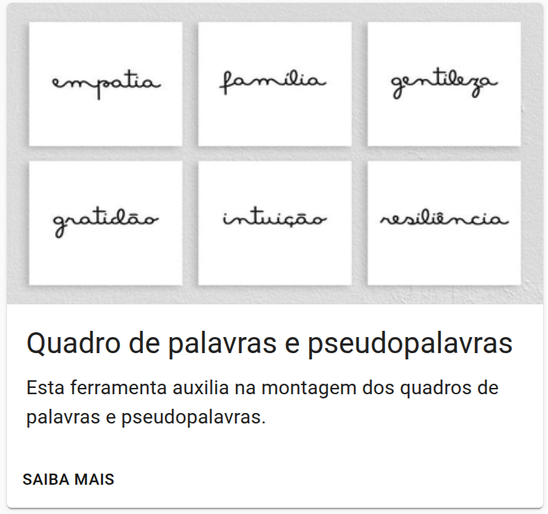
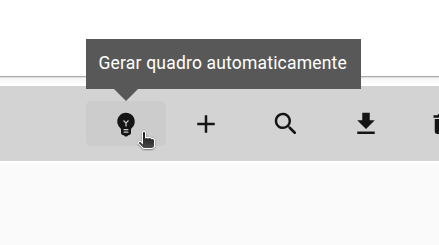

Fluência
Geração inicial de itens
Uma sugestão inteligente para você refinar e construir seus cadernos.

Fluxo de elaboração
Definir critérios
Definir os requisitos do item
Gerar
Montar automaticamente uma primeira versão do quadro
Revisar
Buscar, substituir ou ajustar a ordem das palavras.
GERAÇÃO
Como gerar o quadro
Ao acessar a funcionalidade, você define os parâmetros que orientam a montagem do quadro, como etapa, variações linguísticas e quantidade de palavras para cada característica. A partir dessas escolhas, a ferramenta monta um primeiro quadro para revisão e uso.
1.Acesso

2. Parâmetros e geração

Revisão e ajuste
Refinamento do quadro
Depois da geração inicial, o elaborador pode revisar o quadro com mais autonomia, substituindo palavras, reorganizando o conteúdo e ajustando o resultado conforme desejar.
O que muda para você
Agilidade
Reduz horas de trabalho manual a poucos segundos de processamento.
Precisão
Quadros gerados conforme o perfil linguístico definido.
Flexibilidade
Refine e personalize o resultado.
Atualizações
- ✓ Atualização do significado das palavras
- ✓ Atualização das frequências para o contexto infantil